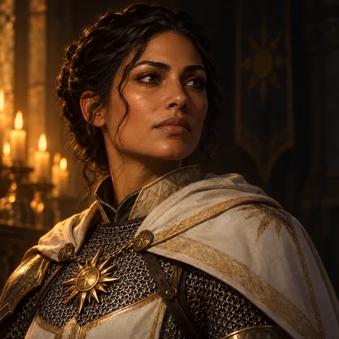
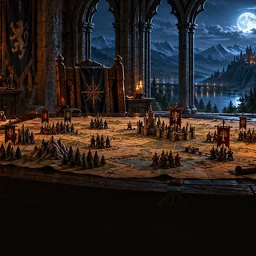

Selene Varga
31 / 38Punti ferita
13Percez. passiva
10Indagare passiva
16Intuiz. passiva
18CA

Master: Marco · 4 personaggi · sessione 7, giovedì 16 ottobre
Il gruppo entra nella cripta dal portone a est.Nota di Marco, il master
Selene lancia Individuazione del magico come rituale.10 minuti · concentrazione
Brann prova ad aprire la grata: fallisce.Nascosta dal resoconto
Selene lancia Guida su Tib per la prova di Furtività: +1d4.
Selene lancia Benedizione su sé, Brann e Kaela.Slot di 1° · concentrazione, 10 round
Il goblin 1 colpisce Selene: 7 danni.Dichiarato da Marco, il master
Selene lancia Parola guaritrice su Kaela: +11 PF.
Tib attacca con lo stocco: 9 danni al goblin 2.Tib gioca senza app: dichiarato dal master
